Chapter 12 Network learning and analysis
Learning and analyzing microbial association networks is another common exploratory data analysis approach aimed at understanding the complex interplay of microbial communities in their natural habitat. Microbial networks consist of nodes, representing microbial species or taxa, and edges, expressing their association. The mathematical representation of a network is the adjacency matrix, which has a non-zero entry for each edge in the network.
A typical workflow for estimating a microbial network involves several steps, including data preprocessing, estimating microbial associations, and transforming them into edge weights. The resulting network can be analyzed using local network properties, such as centrality measures, or global measures that describe the overall structure of the network. Network plots provide further insight into the microbial community structure and allow for exploratory analysis of microbial relationships.
In this chapter, we go through the complete workflow of constructing and analyzing a single microbial network, step by step. A potential next analysis task is to compare networks between groups, such as patients and controls, different environmental conditions, or different time points. How to compare networks between two groups is explained in chapter 13
12.1 Network learning
12.1.1 Typical workflow
Figure 12.1 shows the workflow for learning/constructing a microbial association network as proposed by Peschel et al. (2021). The respective steps are explained below.
Figure 12.1: The typical input is a \(p\) x \(n\) dimensional count matrix coming from a sequencing process, where \(n\) is the number of samples and \(p\) the number of features / ASVs / OTUs. Steps 1 through 6 are explained below. Each matrix resulting from steps 4, 5, and 6 plays a specific role in the final network: The adjacency matrix is used for edge colors, dissimilarity for layout, and similarity for edge weights. In weighted networks, the similarity matrix equals the adjacency matrix.
Zero replacement: Since the following steps usually require non-zero entries in the read count matrix, zero counts must be replaced. A simple solution is to add a pseudo count to the data. Other possible approaches are implemented in the R package zCompositions
Normalization: To avoid compositional effects, the data are normalized using a compositionality aware transformation. A common approach is the centered log-ratio (clr) transformation, which moves the data from a \(p\)-dimensional simplex to Euclidean space so that standard statistical analysis methods are valid. A variance stabilizing transformation (vst) is also a suitable approach for normalizing microbial count data (Badri et al. 2020).
Association estimation: This is the crucial step in network learning to obtain statistical relations between the taxa. Common association measures include correlation, conditional dependence (which we will equate to partial correlation), and proportionality. Further information on these three types of association and their application can be found in Section 12.5. The following list gives a selection of compositionality aware approaches:
- Compositionality aware correlation estimation methods:
- Pearson’s correlation coefficient (+ normalization)
- Spearman’s rank correlation coefficient (+ normalization)
- Covariance shrinkage (corpcor package) (+ normalization)
- SparCC (implemented in SpiecEasi); applied in Section 12.6.1
- CCREPE (ccrepe package)
- CCLasso (R code on GitHub)
- Compositionality aware measures of conditional dependence / partial correlation:
- Proportionality measures (proportionality aware by definition):
- propr
- Shrinkage proportionality estimator; applied in Section 12.6.2
- Compositionality aware correlation estimation methods:
Sparsification: Transforming the estimated associations directly into adjacencies would lead to a dense network where all nodes are connected and only weighted network measures are meaningful. Therefore, the association matrix is usually sparsified to select edges of interest. A common sparsification approach for correlations is thresholding, where correlations with a magnitude below the threshold are set to zero. Another possibility is a statistical test (Student’s t-test or permutation test) with the null hypothesis that the correlation is equal to zero. SpiecEasi uses the StARS stability selection approach (H. Liu, Roeder, and Wasserman 2010) to decide on an appropriate sparsification level of the inferred conditional dependence graph.
Transformation into dissimilarity: A common next step is to simply use the absolute values of the sparsified associations as edge weights. In this way, correlations of high magnitude (both positive and negative) will have a high edge weight. From a biological point of view, it would also make sense to assign a low edge weight to taxa that are strongly negatively associated, which would correspond to a high dissimilarity value. Here we follow Dongen and Enright (2012) to directly transform the sparse associations \(r_{ij}^*\) into dissimilarities, which can later be used for shortest path network measures. Depending on the desired handling of negative associations, one of the two proposed transformations should be chosen:
5a: “signed”: \(d_{ij} = \sqrt{0.5(1-r^*_{ij})}\), where strongly negatively associated taxa have the largest distance and are placed further apart in the network.
5b: “unsigned”: \(d_{ij} = \sqrt{1-{r_{ij}^*}^2}\), resulting in a small distance between strongly associated taxa (regardless of the sign).
Transformation into similarity / edge weight: Finally, the dissimilarities are transformed into similarities by \(s_{ij} = 1 - d_{ij}\), which are used as edge weights. Thus, the similarity matrix is equal to the adjacency matrix in a weighted network.
The main association measure used in this chapter is the SPRING (“Semi-Parametric Rank-based approach for INference in Graphical model”) method proposed by Yoon, Gaynanova, and Müller (2019). SPRING learns conditional dependency graphs for compositional data and follows the neighborhood selection method introduced by Meinshausen and Bühlmann (2006) (“MB”). We will show how to apply the method directly, as well as how to use it in conjunction with the R package NetCoMi, which is specifically designed for the construction and analysis of networks for microbiome data.
See Section 12.5 for a comparison of all three association types (correlation, partial correlation, and proportionality) with more information on each measure and applications.
We demonstrate the workflow using the the PeerJ data set (Potbhare et al. 2022). It contains skin microbial profiles of 58 subjects.
## [1] 674 5812.1.2 Install packages
Three packages used in this chapter are available on GitHub only: SpiecEasi, SPRING, and NetCoMi. We recommend that you install these packages before proceeding.
## pulsar (NA -> 0.3.11) [CRAN]
## huge (NA -> 1.3.5 ) [CRAN]
## ── R CMD build ─────────────────────────────────────────────────────────────────
## * checking for file ‘/tmp/RtmpHCeGz7/remotes383975225676/zdk123-SpiecEasi-5f396da/DESCRIPTION’ ... OK
## * preparing ‘SpiecEasi’:
## * checking DESCRIPTION meta-information ... OK
## * cleaning src
## * checking for LF line-endings in source and make files and shell scripts
## * checking for empty or unneeded directories
## Removed empty directory ‘SpiecEasi/inst’
## * looking to see if a ‘data/datalist’ file should be added
## * building ‘SpiecEasi_1.1.3.tar.gz’## mixedCCA (NA -> 4c2b63f75...) [GitHub]
## egg (NA -> 0.4.5 ) [CRAN]
## linprog (NA -> 0.9-4 ) [CRAN]
## lpSolve (NA -> 5.6.19 ) [CRAN]
## magic (NA -> 1.6-1 ) [CRAN]
## sn (NA -> 2.1.1 ) [CRAN]
## cubature (NA -> 2.1.0 ) [CRAN]
## microbenc... (NA -> 1.4.10 ) [CRAN]
## doFuture (NA -> 1.0.0 ) [CRAN]
## geometry (NA -> 0.4.7 ) [CRAN]
## heatmaply (NA -> 1.5.0 ) [CRAN]
## mnormt (NA -> 2.1.1 ) [CRAN]
## fMultivar (NA -> 4031.84 ) [CRAN]
## latentcor (NA -> 2.0.1 ) [CRAN]
## linprog (NA -> 0.9-4 ) [CRAN]
## lpSolve (NA -> 5.6.19 ) [CRAN]
## magic (NA -> 1.6-1 ) [CRAN]
## egg (NA -> 0.4.5 ) [CRAN]
## mnormt (NA -> 2.1.1 ) [CRAN]
## sn (NA -> 2.1.1 ) [CRAN]
## cubature (NA -> 2.1.0 ) [CRAN]
## microbenc... (NA -> 1.4.10 ) [CRAN]
## doFuture (NA -> 1.0.0 ) [CRAN]
## geometry (NA -> 0.4.7 ) [CRAN]
## heatmaply (NA -> 1.5.0 ) [CRAN]
## fMultivar (NA -> 4031.84) [CRAN]
## latentcor (NA -> 2.0.1 ) [CRAN]
## ── R CMD build ─────────────────────────────────────────────────────────────────
## * checking for file ‘/tmp/RtmpHCeGz7/remotes383954e68e9/irinagain-mixedCCA-4c2b63f/DESCRIPTION’ ... OK
## * preparing ‘mixedCCA’:
## * checking DESCRIPTION meta-information ... OK
## * cleaning src
## * checking for LF line-endings in source and make files and shell scripts
## * checking for empty or unneeded directories
## Omitted ‘LazyData’ from DESCRIPTION
## * building ‘mixedCCA_1.6.2.tar.gz’
##
## ── R CMD build ─────────────────────────────────────────────────────────────────
## * checking for file ‘/tmp/RtmpHCeGz7/remotes38391a5cd2b4/GraceYoon-SPRING-3d641a4/DESCRIPTION’ ... OK
## * preparing ‘SPRING’:
## * checking DESCRIPTION meta-information ... OK
## * checking for LF line-endings in source and make files and shell scripts
## * checking for empty or unneeded directories
## * building ‘SPRING_1.0.4.tar.gz’if(!require(NetCoMi)){
devtools::install_github("stefpeschel/NetCoMi", force = TRUE, ref = "TSE",
dependencies = c("Depends", "Imports", "LinkingTo"),
repos = c("https://cloud.r-project.org/",
BiocManager::repositories()))
}## Biobase (2.60.0 -> 8201fbbe5...) [Bioc]
## phyloseq (1.44.0 -> 73201334b...) [Bioc]
## stringi (1.8.1 -> 1.8.2 ) [CRAN]
## bslib (0.6.0 -> 0.6.1 ) [CRAN]
## scales (1.2.1 -> 1.3.0 ) [CRAN]
## pbivnorm (NA -> 0.6.0 ) [CRAN]
## sp (2.1-1 -> 2.1-2 ) [CRAN]
## crosstalk (1.2.0 -> 1.2.1 ) [CRAN]
## seriation (1.5.1 -> 1.5.3 ) [CRAN]
## mvtnorm (1.2-3 -> 1.2-4 ) [CRAN]
## Cairo (1.6-1 -> 1.6-2 ) [CRAN]
## GO.db (NA -> 3.17.0 ) [CRAN]
## preproces... (NA -> 1.62.1 ) [CRAN]
## impute (NA -> 1.74.1 ) [CRAN]
## fastcluster (NA -> 1.2.3 ) [CRAN]
## dynamicTr... (NA -> 1.63-1 ) [CRAN]
## fdrtool (NA -> 1.2.17 ) [CRAN]
## glasso (NA -> 1.11 ) [CRAN]
## corpcor (NA -> 1.6.10 ) [CRAN]
## jpeg (NA -> 0.1-10 ) [CRAN]
## lavaan (NA -> 0.6-16 ) [CRAN]
## psych (NA -> 2.3.9 ) [CRAN]
## WGCNA (NA -> 1.72-1 ) [CRAN]
## qgraph (NA -> 1.9.8 ) [CRAN]
## orca (NA -> 1.1-1 ) [CRAN]
## filematrix (NA -> 1.3 ) [CRAN]
## doSNOW (NA -> 1.0.20 ) [CRAN]
##
## ── R CMD build ─────────────────────────────────────────────────────────────────
## * checking for file ‘/tmp/RtmpHCeGz7/file38392ce56ce0/DESCRIPTION’ ... OK
## * preparing ‘Biobase’:
## * checking DESCRIPTION meta-information ... OK
## * cleaning src
## * checking for LF line-endings in source and make files and shell scripts
## * checking for empty or unneeded directories
## * looking to see if a ‘data/datalist’ file should be added
## * building ‘Biobase_2.62.0.tar.gz’
##
##
## ── R CMD build ─────────────────────────────────────────────────────────────────
## * checking for file ‘/tmp/RtmpHCeGz7/file3839201fc447/DESCRIPTION’ ... OK
## * preparing ‘phyloseq’:
## * checking DESCRIPTION meta-information ... OK
## * checking for LF line-endings in source and make files and shell scripts
## * checking for empty or unneeded directories
## * looking to see if a ‘data/datalist’ file should be added
## * building ‘phyloseq_1.46.0.tar.gz’
##
## ── R CMD build ─────────────────────────────────────────────────────────────────
## * checking for file ‘/tmp/RtmpHCeGz7/remotes38392e14953e/stefpeschel-NetCoMi-03abaf1/DESCRIPTION’ ... OK
## * preparing ‘NetCoMi’:
## * checking DESCRIPTION meta-information ... OK
## * installing the package to process help pages
## Loading required namespace: NetCoMi
## Registered S3 methods overwritten by 'treeio':
## method from
## MRCA.phylo tidytree
## MRCA.treedata tidytree
## Nnode.treedata tidytree
## Ntip.treedata tidytree
## ancestor.phylo tidytree
## ancestor.treedata tidytree
## child.phylo tidytree
## child.treedata tidytree
## full_join.phylo tidytree
## full_join.treedata tidytree
## groupClade.phylo tidytree
## groupClade.treedata tidytree
## groupOTU.phylo tidytree
## groupOTU.treedata tidytree
## inner_join.phylo tidytree
## inner_join.treedata tidytree
## is.rooted.treedata tidytree
## nodeid.phylo tidytree
## nodeid.treedata tidytree
## nodelab.phylo tidytree
## nodelab.treedata tidytree
## offspring.phylo tidytree
## offspring.treedata tidytree
## parent.phylo tidytree
## parent.treedata tidytree
## root.treedata tidytree
## rootnode.phylo tidytree
## sibling.phylo tidytree
##
## * saving partial Rd database
## * checking for LF line-endings in source and make files and shell scripts
## * checking for empty or unneeded directories
## * building ‘NetCoMi_1.1.0.9000.tar.gz’12.1.3 Data preparation
Before applying the network learning methods, we perform some data preparation steps:
- Aggregation to genus level
- Add relative abundance assay
- Prevalence filtering (keep genera with prevalence > 20%)
- Add assay with log10 transformed abundances
- Add assay with clr transformed abundances
# Agglomerate to genus level
tse <- agglomerateByRank(tse0, rank = "genus")
# Add relative abundances
tse <- transformAssay(tse,
assay.type = "counts",
method = "relabundance",
MARGIN = "samples")
# Filter by prevalence
tse <- subsetByPrevalentFeatures(tse,
prevalence = 0.2,
detection = 0,
assay.type = "relabundance")
# Add log10-transformed abundances
tse <- transformAssay(tse, method = "log10", pseudocount = 1)
# Add clr-transformed abundances
tse <- transformAssay(tse, method = "clr", pseudocount = 1)
dim(tse)## [1] 147 5812.1.4 SPRING network
As explained in Section 12.1.1, we use SPRING (“Semi-Parametric Rank-based approach for INference in Graphical model”) as association measure. We first use the SPRING function directly to construct a conditional dependency graph.
Neither zero replacement nor normalization (steps 1 and 2 in our workflow) are required because SPRING uses a modified clr (mclr) transformation that can handle zero counts, and the correlation estimation method itself can also deal with zeros in the data. mclr is similar to the clr transformation except that mclr considers only the non-zero values. More precisely, the geometric mean is derived from positive values only, and zero counts remain zero after the transformation. This approach is similar to the “robust clr” (rclr) transformation included in the vegan package, except that mclr applies a positive shift to all non-zero values to make them strictly positive. See (Yoon, Gaynanova, and Müller 2019) for details.
The Rmethod argument is set to “approx” to estimate the correlations using a hybrid multi-linear interpolation approach proposed by Yoon, Müller, and Gaynanova (2021). This method considerably reduces the runtime while controlling the approximation error.
SPRING uses the StARS (“Stability Approach to Regularization Selection”) method (H. Liu, Roeder, and Wasserman 2010) to obtain a sparse association matrix. Thus, also step 4 of our workflow is already included. We set the StARS threshold to 0.05 to get a sparser graph.
set.seed(13075)
spring_est <- SPRING(t(assay(tse, "counts")),
Rmethod = "approx",
thresh = 0.05,
lambdaseq = "data-specific")# Get index of the optimal lambda selected by StARS
opt.K <- spring_est$output$stars$opt.index
# Store partial correlation matrix belonging to the optimal lambda as matrix
spring_cor <- SpiecEasi::symBeta(as.matrix(spring_est$output$est$beta[[opt.K]]))
spring_cor <- as.matrix(spring_cor)
rownames(spring_cor) <- colnames(spring_cor) <- rownames(tse)
diag(spring_cor) <- 1As explained in Section 12.1.1, the estimated associations are sparsified, transformed into dissimilarities, and finally transformed into similarities, which are the adjacency values. We write a function for these steps, which will be reused later.
Since SPRING already includes a sparsification approach, the thresh argument is not needed here, but will be needed in Section 12.5 for other association measures.
To be consistent with the workflow, we provide two dissimilarity transformations: “signed” and “unsigned” (see Section 12.1.1 for an explanation). These transformations were introduced by Dongen and Enright (2012). We use the “signed” transformation in our examples so that strongly negatively associated genera have low edge weights.
The output of the function is an igraph object, which can be plotted and analyzed using functions from the igraph package.
# Arguments:
# - assoMat: association matrix
# - threshold: associations below the threshold are set to zero
# - dissTrans: dissimilarity transformation ("signed" or "unsigned")
transform_asso <- function(assoMat, thresh = NULL, dissTrans = "signed") {
# Sparsification
if (!is.null(thresh)) {
assoMat[abs(assoMat) < thresh] <- 0
}
# Compute dissimilarity matrix
if (dissTrans == "signed") {
dissMat <- sqrt(0.5 * (1 - assoMat))
} else {
dissMat <- sqrt(1 - assoMat^2)
}
# Dissimilarity between nodes with zero correlation is set to 1
# (these nodes are unconnected and thus should have maximum dissimilarity)
dissMat[assoMat == 0] <- 1
# Compute similarity matrix
simMat <- 1 - dissMat
# Turn into igraph object
graphObj <- SpiecEasi::adj2igraph(simMat)
return(list(graph = graphObj, adja = simMat, asso = assoMat, diss = dissMat))
}The graph object can now be plotted using the igraph package, which is a state-of-the-art package for network analysis and visualization. Other packages that could be used for network plotting are the qgraph package or the ggnet2 package. Since we will use igraph for network analysis later on, we are using its plotting function here as well.
We use the Fruchterman-Reingold layout (a force-directed layout) for node placement. By placing strongly connected nodes close together and those with low edge weight far apart, this layout results in an easy-to-read network plot.
The node size is proportional to a taxon’s log10-transformed abundance, which we previously added to the tse object, averaged across all samples. The values are rescaled to be visually distinguishable.
# Node sizes
vsize <- (colMeans(t(assay(tse, "log10"))) + 1) * 3
# Fruchterman-Reingold layout from igraph package
set.seed(13075)
lay_fr <- layout_with_fr(spring_graph)
plot(spring_graph, layout = lay_fr, vertex.size = vsize, vertex.label = NA,
main = "Conditional dependence graph\n(generated with SPRING)")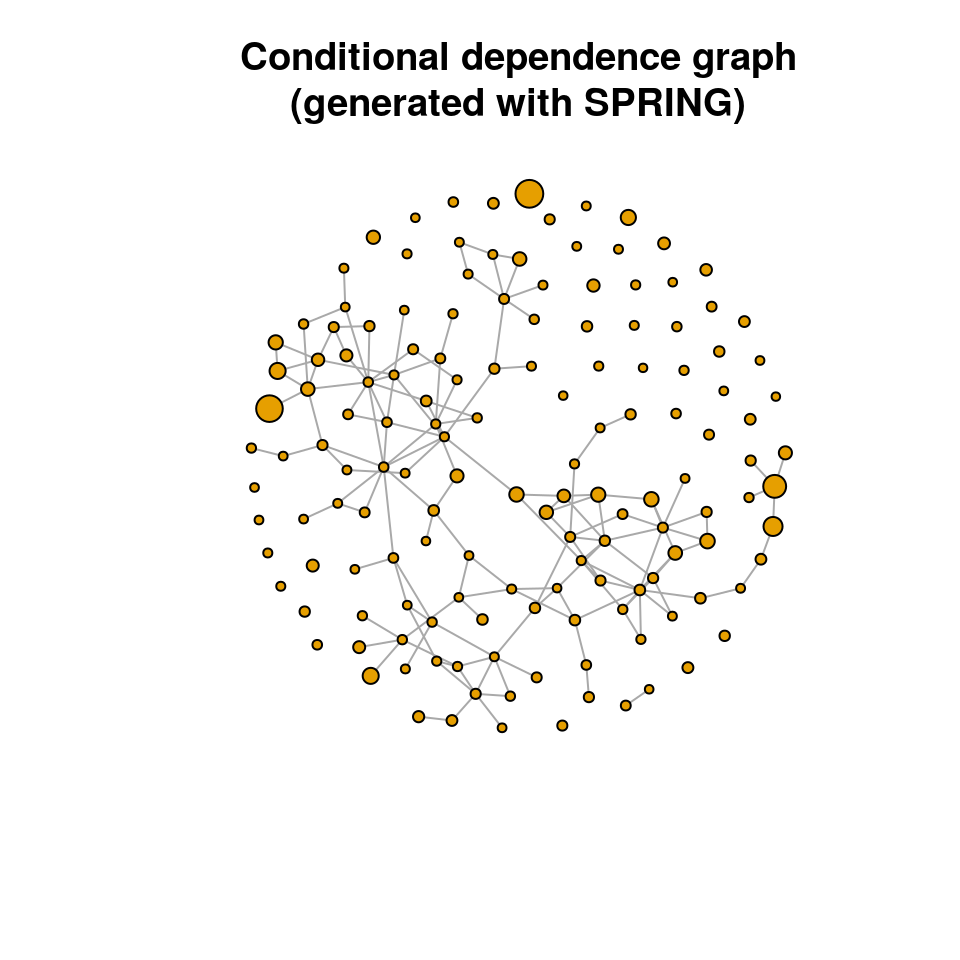
12.1.5 NetCoMi network
The NetCoMi (Peschel et al. 2021) package is specifically designed to construct, analyze, and compare networks for microbiome data and implements the complete workflow described in Section 12.1.1. Instead of using several functions for each of the steps, NetCoMi provides a single function for network construction (netConstruct()), so the package streamlines the workflow considerably. The user can choose from a variety of methods for data preprocessing, association estimation, sparsification, and transformation. The returned microNet object can then be passed to netAnalyze() (the network analysis function) so that all necessary information is available for the network analysis workflow.
We again use SPRING as one of the association measures available in NetCoMi to construct a conditional dependency graph.
To demonstrate how taxa are filtered with netConstruct(), we will use the unfiltered tse object this time. The filtering is the same as before: Taxa occurring in less than 20% of the samples are removed.
netcomi_net <- netConstruct(tse,
taxRank = "genus",
filtTax = "numbSamp",
filtTaxPar = list(numbSamp = 0.2),
measure = "spring",
measurePar = list(thresh = 0.05,
Rmethod = "approx"),
sparsMethod = "none",
dissFunc = "signed",
seed = 13075)netConstruct() returns an object of the class microNet, which contains all matrices generated during network construction.
The object also contains an edge list, giving each edge’s estimated association, dissimilarity, and adjacency. Let’s take a quick look at the edges with the highest and lowest edge weights:
edgelist <- netcomi_net$edgelist1[order(netcomi_net$edgelist1$adja,
decreasing = TRUE), ]
head(edgelist)## v1 v2 asso diss adja
## 73 Citrobacter Escherichia 0.3682 0.5621 0.4379
## 63 Buttiauxella Serratia 0.2426 0.6154 0.3846
## 69 Chitinivibrio Pseudogracilibacillus 0.2203 0.6244 0.3756
## 19 Algicola Siccibacter 0.2193 0.6248 0.3752
## 111 Haliangium Marinobacter 0.2148 0.6266 0.3734
## 143 Planomicrobium Virgibacillus 0.2006 0.6322 0.3678## v1 v2 asso diss adja
## 132 Mycobacterium Salinibacillus 0.0017483 0.7065 0.2935
## 24 Amphritea Providencia 0.0014085 0.7066 0.2934
## 102 Erwinia Siccibacter 0.0013114 0.7066 0.2934
## 116 Holophaga Methylarcula 0.0007828 0.7068 0.2932
## 17 Algicola Lysobacter 0.0005191 0.7069 0.2931
## 95 Enterobacter Janibacter -0.0013921 0.7076 0.2924As before, the adjacency matrix is converted into an igraph object. Further steps like sparsification and transformation are not necessary because they are done internally by netConstruct().
par(mfrow = c(1,2))
plot(spring_graph, layout = lay_fr, vertex.size = vsize,
vertex.label = NA, main = "SPRING network")
plot(netcomi_graph, layout = lay_fr, vertex.size = vsize,
vertex.label = NA, main = "NetCoMi network\n(with SPRING associations)")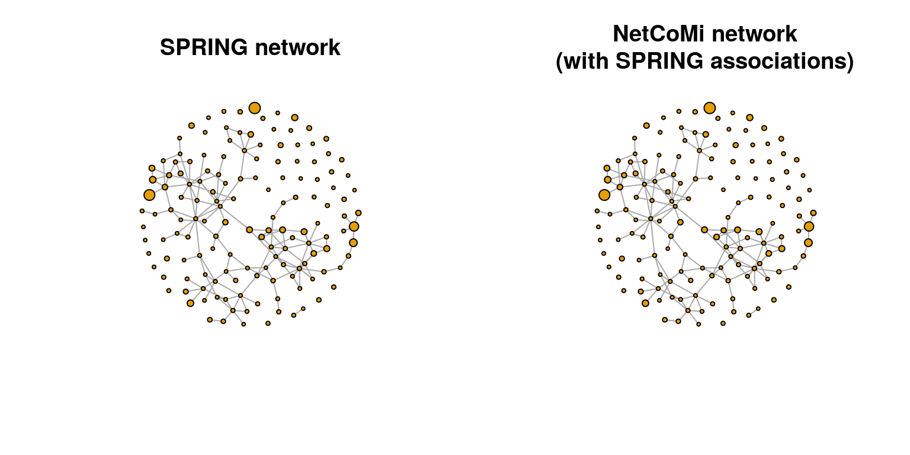
The left network constructed directly with the SPRING() function and the right network constructed with NetCoMi are exactly the same.
12.2 Network analysis
The computed network is now analyzed using appropriate methods. We will first use the igraph package to analyze the SPRING network. NetCoMi’s netAnalyze() function will be used later to analyze the constructed microNet object.
12.2.1 Network analysis with igraph
12.2.1.1 Centrality measures
Centrality measures express the importance of nodes within the network. Common measures are the degree, betweenness, closeness, and eigenvector centrality. The igraph package provides functions to compute these measures.
# We access igraph directly with "::" because there are more packages loaded in
# this chapter that contain a degree() function.
centr_df <- data.frame(Degree = igraph::degree(spring_graph))
centr_df$Betweenness <- betweenness(spring_graph)
centr_df$Closeness <- closeness(spring_graph)
centr_df$Eigenvector <- eigen_centrality(spring_graph)$vector
rownames(centr_df) <- rownames(spring_cor)
head(centr_df, 15)## Degree Betweenness Closeness Eigenvector
## Abyssicoccus 0 0 NaN 2.198e-17
## Acidaminococcus 2 0 0.006338 1.862e-01
## Acinetobacter 3 5 0.005436 1.257e-01
## Actinomyces 0 0 NaN 2.198e-17
## Actinoplanes 2 99 0.005004 1.099e-02
## Aerococcus 0 0 NaN 2.198e-17
## Aeromonas 4 351 0.007331 2.023e-01
## Agromyces 6 435 0.007581 5.293e-01
## Algicola 4 264 0.007064 1.500e-01
## Alicyclobacillus 0 0 NaN 2.198e-17
## Alteribacillus 0 0 NaN 2.198e-17
## Ammoniibacillus 1 0 0.004965 5.419e-02
## Amphritea 5 382 0.006133 1.335e-02
## Amycolatopsis 1 0 0.005997 1.338e-01
## Anaerococcus 2 392 0.003985 1.288e-03The closeness centrality is “NaN” for some genera. These are unconnected nodes, as can be seen by the zero degree and betweenness centrality.
12.2.1.2 Scale node sizes by degree
Centrality measures can be visualized in the network plot by scaling the node sizes according to one of these measures. We plot the Spring graph using the same layout as before and with the node sizes scaled according to all four centrality measures.
Of the four centrality measures, only the degree has a range suitable to be used as node size. The other centrality measures must be rescaled because their range is either too small or too large. The following scaling is a suggestion that works for this example. The values might be adapted for other data sets.
vsize_df <- as.matrix(centr_df)
vsize_df[, "Betweenness"] <- log(vsize_df[, "Betweenness"])
vsize_df[, "Closeness"] <- log(vsize_df[, "Closeness"] * 1000)
vsize_df[, "Eigenvector"] <- vsize_df[, "Eigenvector"] * 10
vsize_df[is.infinite(vsize_df) | is.na(vsize_df)] <- 0
head(vsize_df)## Degree Betweenness Closeness Eigenvector
## Abyssicoccus 0 0.000 0.000 2.198e-16
## Acidaminococcus 2 0.000 1.846 1.862e+00
## Acinetobacter 3 1.609 1.693 1.257e+00
## Actinomyces 0 0.000 0.000 2.198e-16
## Actinoplanes 2 4.595 1.610 1.099e-01
## Aerococcus 0 0.000 0.000 2.198e-16par(mfrow = c(2,2))
for (i in seq_along(centr_df)) {
plot(spring_graph, layout = lay_fr, vertex.size = vsize_df[, i],
vertex.label = NA, main = colnames(centr_df)[i])
}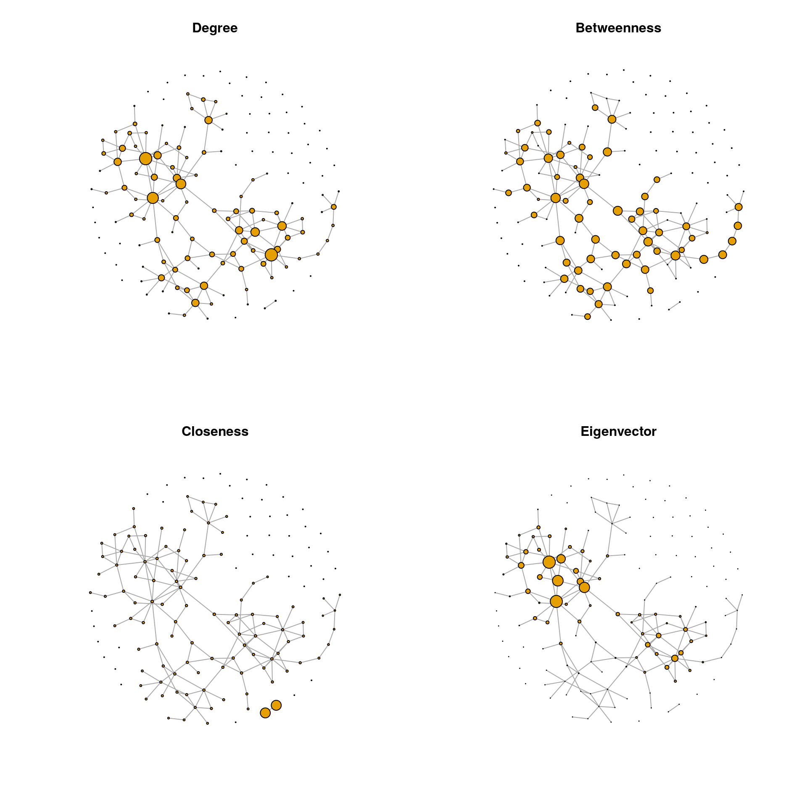
12.2.1.3 Degree distribution
The degree distribution is another popular measure that expresses the probability distribution of degrees over the entire network. It thus provides insight into the overall network structure. We plot the degree distribution for all four association estimation methods to compare the network structure.
# Compute degree distribution
ddist<- igraph::degree.distribution(spring_graph)
# Data frame needed for ggplot2
df <- data.frame(Degree = as.factor((seq_along(ddist)) - 1),
Fraction = ddist)
ggplot(data = df, aes(x = Degree, y = Fraction, group = 1)) +
geom_line() +
geom_point() +
theme_bw()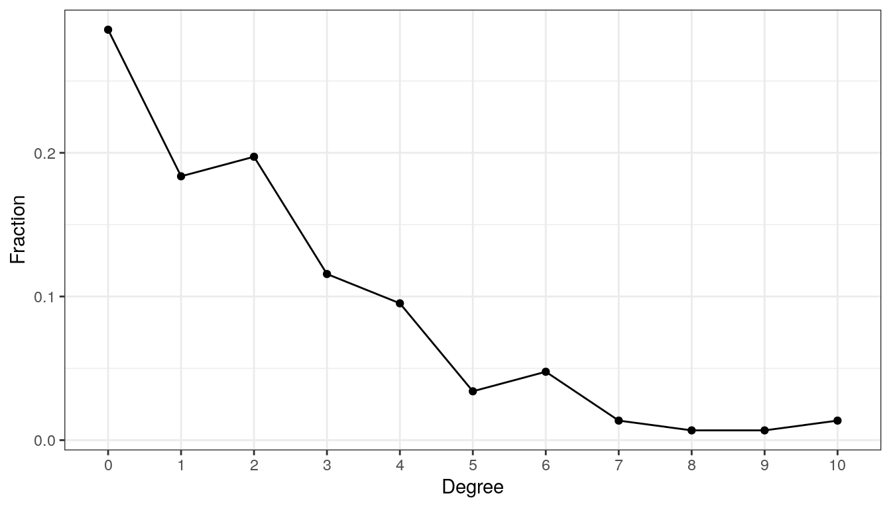
The network has a large number of singletons and sparsely connected nodes, and only a small number of nodes with a higher degree of 7 or more.
12.2.1.4 Clustered heatmaps
Using the ComplexHeatmap package, we plot a heatmap of the association matrix estimated with SPRING. Rows and columns are sorted according to the clusters identified via hierarchical clustering.
We select the 50 nodes with the highest sum of edge weights to get a smaller heatmap.
sel <- names(sort(rowSums(spring_cor), decreasing = TRUE))[seq_len(50)]
adja_sel <- spring_cor[sel, sel]# Color vector
col <- colorRamp2(c(-1, -0.5, 0, 0.5, 1),
c("royalblue4", "lightblue", "white", "orange", "firebrick3"))
Heatmap(adja_sel,
col = col,
rect_gp = gpar(col = "gray", lwd = 1),
show_row_names = FALSE,
show_column_names = FALSE,
name = "Association")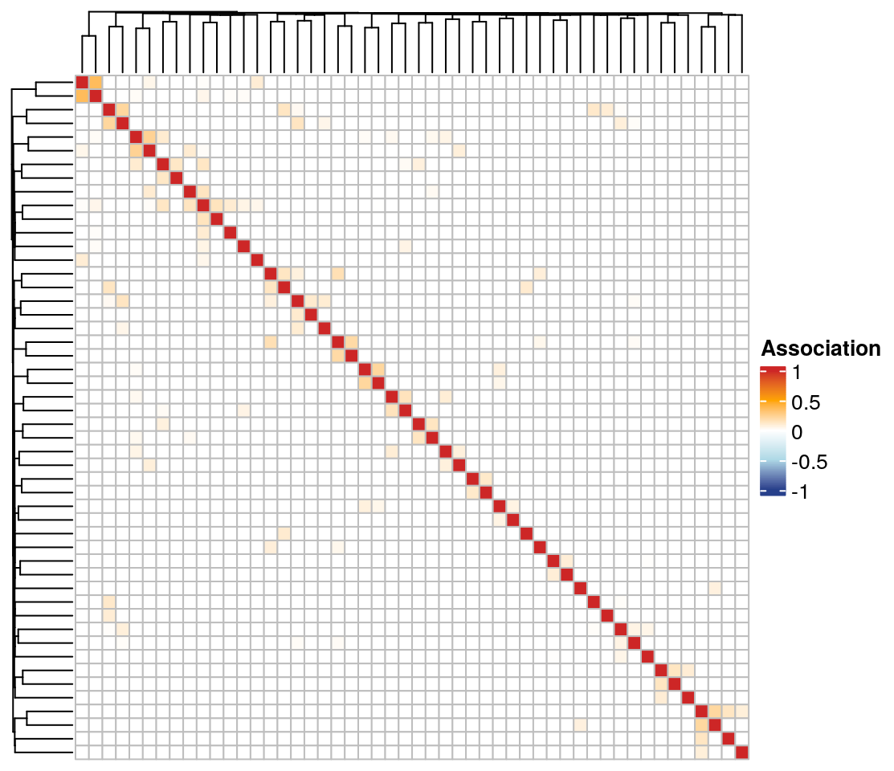
The associations are generally quite low, and there are no prominent clusters detected by hierarchical clustering.
12.2.1.5 Global network measures
Global measures describe the overall network structure. We take a look at three common measures: density, transitivity, and average path length. The values are again computed with igraph functions.
12.2.2 Network analysis with NetCoMi
The netcomi_net object of class microNet created before is now passed to netAnalyze() to perform network analysis with NetCoMi.
The function computes several common network characteristics such as centrality measures, cluster assignment, the graphlet correlation matrix, as well as global network measures.
The user has several options to choose from, such as a clustering method, how to define hubs, and whether or not to normalize centrality values. See the help page ?netAnalyze for a description of the arguments.
By default, a heatmap of the Graphlet Correlation Matrix (GCM) is returned (with graphlet correlations in the upper triangle and significance codes resulting from Student’s t-test in the lower triangle). See ?calcGCM and ?testGCM for details.
netcomi_netprops <- netAnalyze(netcomi_net,
clustMethod = "cluster_fast_greedy",
hubPar = "eigenvector",
normDeg = FALSE)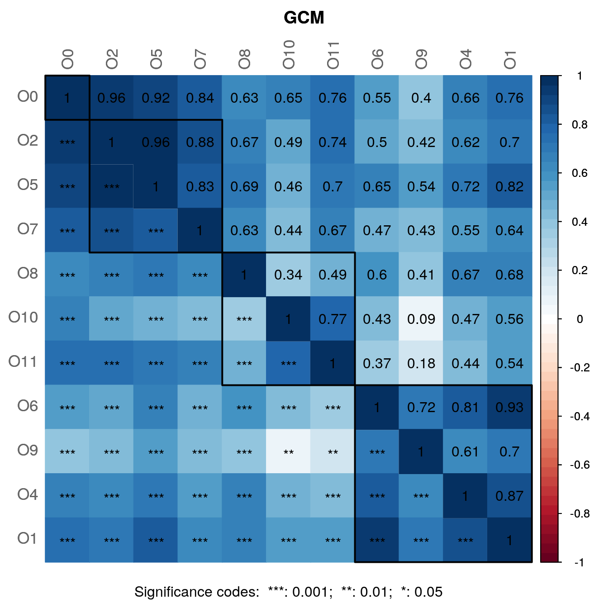
##
## Component sizes
## ```````````````
## size: 103 2 1
## #: 1 1 42
## ______________________________
## Global network properties
## `````````````````````````
## Largest connected component (LCC):
##
## Relative LCC size 0.70068
## Clustering coefficient 0.21253
## Modularity 0.70495
## Positive edge percentage 99.35065
## Edge density 0.02932
## Natural connectivity 0.01173
## Vertex connectivity 1.00000
## Edge connectivity 1.00000
## Average dissimilarity* 0.99084
## Average path length** 3.81101
##
## Whole network:
##
## Number of components 44.00000
## Clustering coefficient 0.21253
## Modularity 0.70787
## Positive edge percentage 99.35484
## Edge density 0.01444
## Natural connectivity 0.00782
## -----
## *: Dissimilarity = 1 - edge weight
## **: Path length = Units with average dissimilarity
##
## ______________________________
## Clusters
## - In the whole network
## - Algorithm: cluster_fast_greedy
## ````````````````````````````````
##
## name: 0 1 2 3 4 5 6 7 8 9 10
## #: 42 16 11 14 20 9 17 8 5 3 2
##
## ______________________________
## Hubs
## - In alphabetical/numerical order
## - Based on empirical quantiles of centralities
## ```````````````````````````````````````````````
## Agromyces
## Aneurinibacillus
## Anoxybacillus
## Chitinivibrio
## Erwinia
## Geobacillus
## Janibacter
## Pseudogracilibacillus
##
## ______________________________
## Centrality measures
## - In decreasing order
## - Centrality of disconnected components is zero
## ````````````````````````````````````````````````
## Degree (unnormalized):
##
## Anoxybacillus 10
## Erwinia 10
## Chitinivibrio 9
## Janibacter 8
## Escherichia/Shigella 7
##
## Betweenness centrality (normalized):
##
## Janibacter 0.3941
## Chitinivibrio 0.3137
## Enterobacter 0.2780
## Buttiauxella 0.2454
## Erwinia 0.2095
##
## Closeness centrality (normalized):
##
## Chitinivibrio 0.5247
## Janibacter 0.5067
## Anoxybacillus 0.4841
## Pseudogracilibacillus 0.4659
## Erwinia 0.4653
##
## Eigenvector centrality (normalized):
##
## Anoxybacillus 1.0000
## Chitinivibrio 0.9831
## Pseudogracilibacillus 0.8657
## Janibacter 0.8361
## Aneurinibacillus 0.6890Interpretation of some findings:
- The largest connected component (LCC) has 103 nodes and the network contains 42 singletons.
- 10 clusters have been identified, containing 2 to 20 nodes.
- There are 8 hub nodes detected, which by definition are the nodes with the highest eigenvector centrality.
- The average path length in the LCC is 3.811. This means that on average it takes 3.811 steps (step length is the average dissimilarity) to get from one node to another. Note that the average path length in
NetCoMiis defined differently than in theigraphpackage, which is why the values differ. - Low values of edge density and the connectivity measures indicate that the network is rather sparse and not robust to perturbations (i.e., removal of nodes or edges).
12.3 Network visualization
Further insight into the network structure can be gained by visualizing the network. We have already seen examples of how to plot a network using the igraph package. Here we will use NetCoMi’s plot function. It takes as input the microNetProps object returned by netAnalyze(), which contains all computed network properties. This has the advantage that the user can choose which properties to plot by simply changing some arguments. The plot function is based on qgraph, which is another state-of-the-art R package for network visualization. The help page can be accessed via ?plot.microNetProps.
12.3.1 Highlight node properties
In the first plot, node colors represent the detected clusters and node sizes are scaled by eigenvector centrality. Hub nodes are highlighted by default. Singletons are not included in the plot. To improve the readability, NetCoMi’s “intelligent” label shortening approach is used.
Note that nodes are sometimes placed too close together so that the labels overlap. You may need to play around with the repulsion argument until you find a value where the labels are legible, but also the clusters are still well recognizable.
plot(netcomi_netprops,
repulsion = 0.98,
rmSingles = TRUE,
shortenLabels = "intelligent",
labelScale = FALSE,
nodeSize = "eigenvector",
nodeSizeSpread = 3,
nodeColor = "cluster",
hubBorderCol = "gray40",
cexNodes = 1.8,
edgeTranspHigh = 20,
title1 = "Network properties highlighted",
showTitle = TRUE,
cexTitle = 2.3,
mar = c(1, 3, 4, 8))
legend(0.7, 1.1, cex = 1.7, title = "estimated correlation:",
legend = c("+","-"), lty = 1, lwd = 3, col = c("#009900","red"),
bty = "n", horiz = TRUE)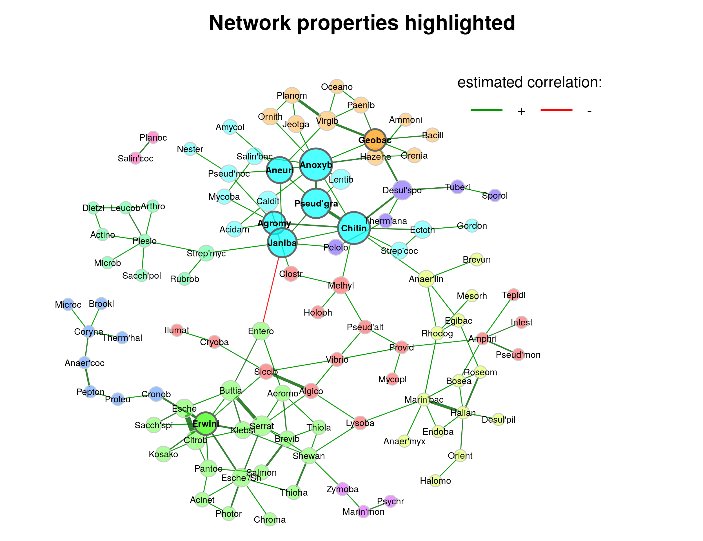
12.3.2 Highlight data features
We now color nodes according to their phylum. The node sizes are proportional to a taxon’s sum of mclr-transformed abundances. As already mentioned in Section 12.1.4, this is the normalization method used by SPRING. A color palette from RColorBrewer is used here.
# Generate vector with phylum names for node coloring
phyla <- as.factor(rowData(tse)$phylum)
names(phyla) <- rowData(tse)$genus
# Create color vector
colvec <- RColorBrewer::brewer.pal(length(levels(phyla)), "Set3")
plot(netcomi_netprops,
repulsion = 0.98,
rmSingles = TRUE,
shortenLabels = "intelligent",
labelScale = FALSE,
nodeSize = "mclr",
nodeColor = "feature",
featVecCol = phyla,
colorVec = colvec,
nodeTransp = 20,
highlightHubs = FALSE,
cexNodes = 1.8,
edgeTranspHigh = 20,
title1 = "Data features highlighted",
showTitle = TRUE,
cexTitle = 2.3,
mar = c(1, 10, 4, 6))
# Add legends
legend(0.7, 1.1, cex = 1.7, title = "estimated correlation:",
legend = c("+","-"), lty = 1, lwd = 3, col = c("#009900","red"),
bty = "n", horiz = TRUE)
# Colors used in the legend should be equally transparent as in the plot
col_transp <- colToTransp(colvec, 20)
legend(-1.8, 1.1, cex = 1.7, pt.cex = 2.5, title = "Phylum:",
legend=levels(phyla), col = col_transp, bty = "n", pch = 16) 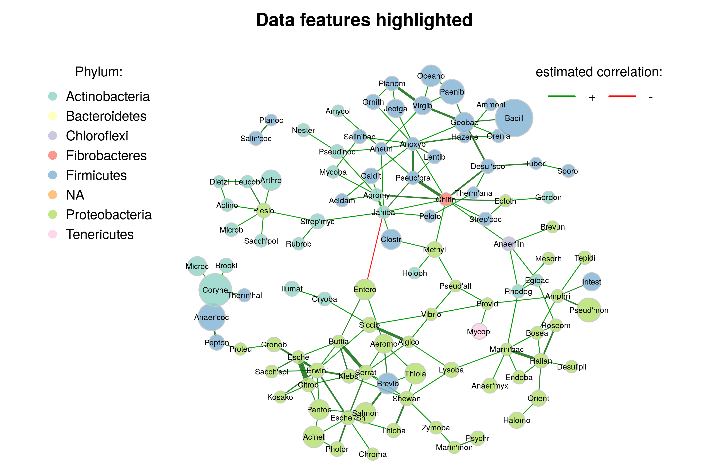
A few things to observe:
- Genera belonging to the same phylum tend to cluster together, though not perfectly.
- Genera with a low total count play a rather unimportant role in the network, i.e., they have a low centrality.
- There is only one negative edge in the network. This edge is between two clusters, as expected when using the “signed” transformation.
12.4 Which method(s) to choose?
Throughout all the steps from primary data to potentially significant network features, there is a variety of methods and parameters to choose from. However, there is no general consensus in the community on the “right” way to estimate and analyze microbial networks. In the absence of a “best method” for inferring and analyzing microbial networks, researchers may be tempted to try different methods and report only the optimal results or those that fit some prior knowledge. This carries the risk of “overfitting” the analysis to the existing data so that the results are not replicable for new data (Ullmann et al. 2023).
Therefore, the selection of the workflow building blocks should be set up once and independently of any hypothesis about the data, thus avoiding the fallacy of starting to “fish” for results that best fit a previously formulated hypothesis. For example, one should ask prior to the analysis whether correlation or conditional dependence as a measure of association better fits the research question and choose the method accordingly. Another example is the choice of transformation from estimated association to dissimilarity (i.e., “signed” or “unsigned”), which completely changes the interpretation and characteristics of the network. This choice should be made based on the research question before starting the analysis.
12.5 More about association measures
As mentioned in the introduction of this chapter, there are three types of association measures that are commonly used to express relationships between taxa: correlation, conditional dependence, and proportionality. Below, we provide a brief explanation of each of these measures, along with lists of available compositionality-aware approaches.
- Correlation: Two popular measures of ecological association are Pearson’s correlation coefficient and Spearman’s rank correlation coefficient, both of which can be inferred from empirical (sample) covariances. However, in the \(p\gg n\) setting, which most microbiome datasets are in, sample covariances and correlations are unreliable because the parameters being estimated are typically underdetermined. One way to improve sample covariance estimates is to assume that the underlying covariance matrix is sparse and use a regularized covariance estimator to implement this structural assumption. The Schäfer-Strimmer shrinkage estimator (Schäfer and Strimmer 2005) is one possible method for estimating a sparse correlation matrix. Other popular methods, especially designed to estimate correlations for compositional data, are SparCC (“Sparse Correlations for Compositional data”) by J. Friedman and Alm (2012), CCREPE (“Compositionality Corrected by REnormalization and PErmutation”) by Faust et al. (2012), and CCLasso (“Correlation inference for Compositional data through Lasso”) by Huaying Fang et al. (2015). The latter three methods already include a compositionality aware normalization, and SparCC also includes a zero replacement approach.
- Conditional dependence: Since standard correlations include both direct and indirect dependencies, conditional dependence or partial correlation is often preferred for measuring association. Unlike (marginal) correlation, it expresses the relationship between two features conditioned on all other features in the data set. The approach and R package SpiecEasi (“Sparse InversE Covariance estimation for Ecological Association and Statistical Inference”) by Kurtz et al. (2015) is specifically designed for inferring ecological networks from microbiome data and includes two approaches for estimating conditional dependence structures between taxa: Neighborhood Selection; short “MB” (Meinshausen and Bühlmann 2006) and (inverse) covariance selection (Jerome Friedman, Hastie, and Tibshirani 2008), which is based on a penalized maximum likelihood approach and is also known as “graphical lasso”. Another approach and R package for inferring partial correlations from microbiome data is SPRING (“Semi-Parametric Rank-based approach for INference in Graphical model”) by Yoon, Gaynanova, and Müller (2019). They also use the MB neighborhood selection method, but introduce a novel semi-parametric rank-based approach for sparse partial correlation estimation that can naturally handle the excess of zeros in the data. gCoda (H. Fang et al. 2017) is another conditional dependence measure based on penalized maximum likelihood estimation. All of the aforementioned conditional dependence measures address the high dimensionality of microbiome data.
- Proportionality: Lovell et al. (2015) introduce proportionality as an alternative measure of pairwise association for compositional data. The idea is that if the relative abundances between two taxa \(i\) and \(j\) are proportional, then their corresponding absolute abundances are also proportional: \(\frac{\omega_i}{m} \propto \frac{\omega_j}{m} \Rightarrow \omega_i \propto \omega_j\), where \(m\) is the sum of counts in the sample. It follows that proportionality is identical for the observed (relative) read counts and the true unobserved counts. The proportionality measure proposed by Lovell et al. (2015) is based on log-ratio variance \(var(log \frac{x_i}{x_j})\), which is zero when \(\omega_i\) and \(\omega_j\) are perfectly proportional. Proportionality is implemented in the R package propr. Badri et al. (2020) extend the proportionality measure to a so-called “shrinkage proportionality estimator”. It combines proportionality with the covariance shrinkage approach to obtain consistent association estimates even with small sample sizes.
12.6 Comparison of association measures
In this section, we provide three additional examples for constructing a network using each of the three types of association:
- Correlation using
SparCC - Partial correlation using
SpiecEasi - Proportionality using the shrinkage proportionality measure
12.6.1 SparCC
The first association measure we look at is SparCC (“Sparse Correlations for Compositional data”), introduced by J. Friedman and Alm (2012). It estimates Pearson correlations while taking into account the compositional structure of the data. The SpiecEasi package provides an implementation of this method.
# Set seed for reproducibility
set.seed(13075)
# Compute correlation matrix
sparcc_cor <- SpiecEasi::sparcc(t(assay(tse, "counts")))$Cor
rownames(sparcc_cor) <- colnames(sparcc_cor) <- rownames(tse)We reuse the transform_asso() function created in Section 12.1.4, which sparsifies the association matrix, transforms it into a similarity matrix, and finally returns an igraph object.
Two threshold values are used to see the effect of sparsification later in the network plot.
12.6.2 Shrinkage proportionality
In the second example, microbial associations are measured by proportionality, originally introduced by Lovell et al. (2015). We use the shrinkage proportionality estimator proposed by Badri et al. (2020), which gives consistent results even for small sample sizes. Since there is no R package implementing this estimator, we use the rho_shrink_est() function provided in the GitHub repository associated with the paper. The function is slightly modified to take normalized counts as input.
# norm_counts: clr-transformed count matrix with samples in rows
rho_shrink_est <- function(norm_counts, ...) {
shrunk_cov <- cov.shrink(norm_counts, ...)
p <- ncol(norm_counts)
J <- matrix(rep(diag(shrunk_cov), p), p)
rho <- 2 * shrunk_cov / (J + t(J))
(rho + t(rho)) / 2
}# Apply the shrinkage proportionality estimator to the clr-transformed counts
prop_est <- as(rho_shrink_est(t(assay(tse, "clr"))), "matrix")## Estimating optimal shrinkage intensity lambda.var (variance vector): 0.0857
##
## Estimating optimal shrinkage intensity lambda (correlation matrix): 0.3634Again, we use our transformation function to convert the association matrix into a graph object.
12.6.3 SpiecEasi - MB
As third example, we use the SpiecEasi (“Sparse InversE Covariance estimation for Ecological Association and Statistical Inference”) approach proposed by Kurtz et al. (2015) to estimate a sparse conditional dependency graph. The neighborhood selection method (“MB”) introduced by Meinshausen and Bühlmann (2006) is used for network learning. The approach is implemented in the R package SpiecEasi.
set.seed(13075)
se_mb_est <- spiec.easi(t(assay(tse, "counts")),
method = 'mb', nlambda = 20,
pulsar.params = list(rep.num = 20))Since SpiecEasi uses the StARS (“Stability Approach to Regularization Selection”) method (H. Liu, Roeder, and Wasserman 2010) to obtain a sparse association matrix, we don’t need to set a threshold here. We store the partial correlations corresponding to the StARS-optimal lambda and convert them into an igraph object.
12.6.4 Network plots
The graph objects can now be plotted using the igraph package. The same layout is used in all four plots so that the networks are comparable.
# Node sizes
vsize <- (colMeans(t(assay(tse, "log10"))) + 1) * 3
# Use Fruchterman-Reingold (force-directed) layout
set.seed(13075)
lay_fr <- layout_with_fr(se_mb_graph)
par(mfrow = c(2,2))
plot(sparcc_graph03, layout = lay_fr, vertex.size = vsize,
vertex.label = NA, main = "SparCC (thresh 0.3)")
plot(sparcc_graph04, layout = lay_fr, vertex.size = vsize,
vertex.label = NA, main = "SparCC (thresh 0.4)")
plot(prop_graph, layout = lay_fr, vertex.size = vsize,
vertex.label = NA, main = "Shrinkage proportionality\n(thresh 0.4)")
plot(se_mb_graph, layout = lay_fr, vertex.size = vsize,
vertex.label = NA, main = "SpiecEasi (MB)")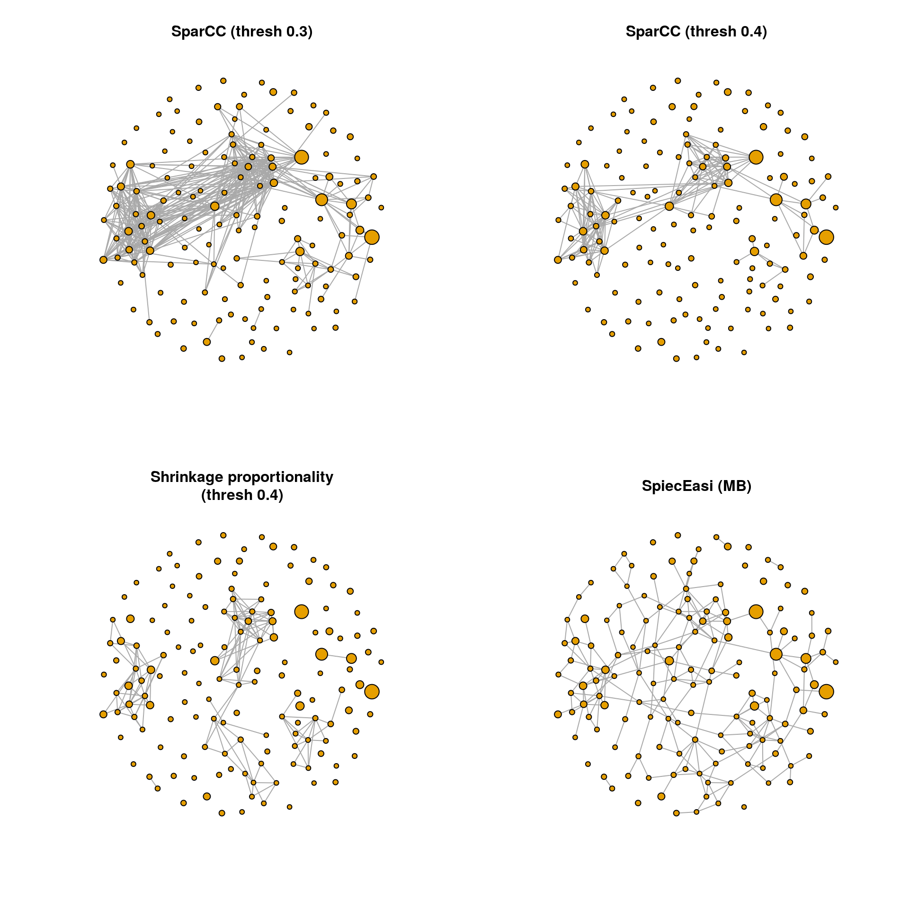
A view observations:
The density of SparCC (threshold 0.4), proportionality and SpiecEasi is comparable, while the SparCC correlation network with threshold 0.3 is much denser. However, there are edges in the proportionality and SpiecEasi networks that are not present in the two SparCC networks. The SpiecEasi network has less highly connected nodes than the other three networks, but more nodes with one or two connections.
We will look at the degree distribution in the next section to quantify these observations.
12.6.5 Network analysis
Here we repeat some of the network analysis approaches explained in Section 12.2. The analyses are performed simultaneously for the three association measures as well as the SPRING network constructed in Section 12.1.4. Therefore, we start by creating a list of all the graph objects we need for the analyses.
graphlist <- list(SparCC = sparcc_graph04,
Proportionality = prop_graph,
SpiecEasi = se_mb_graph,
SPRING = spring_graph)12.6.5.1 Degree distribution
The degree distribution is plotted for all four measures to compare the overall network structure.
# Compute degree distributions
ddlist <- lapply(graphlist, igraph::degree.distribution)
# Maximum degree
maxdeg <- max(lengths(ddlist))
# Make list elements the same length
for(i in seq_along(graphlist)) {
length(ddlist[[i]]) <- maxdeg
}
# Data frame needed for ggplot2
df <- data.frame(Degree = rep(seq_len(maxdeg), length(graphlist)),
Fraction = unlist(ddlist),
Method = rep(names(graphlist), each = maxdeg))
ggplot(df, aes(x = Degree, y = Fraction, group = Method)) +
geom_line(aes(color = Method)) +
geom_point(aes(color = Method)) +
theme_bw()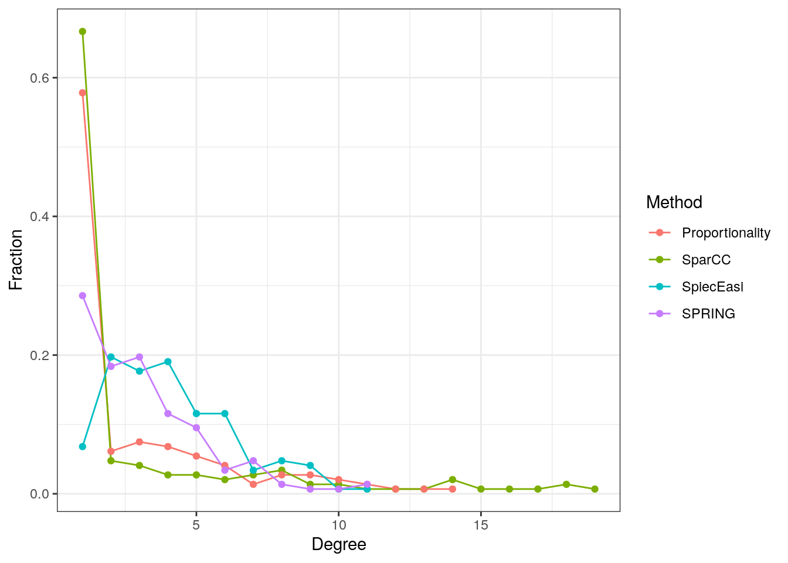
The SparCC and shrinkage proportionality networks have a considerably higher proportion of singletons (zero-degree nodes) than the two conditional dependency graphs, but a lower proportion of nodes with degrees between one and five. The SpiecEasi and SPRING graphs, on the other hand, have a higher proportion of low degree nodes, but no highly connected nodes with a degree greater than eleven.
12.6.5.2 Clustered heatmaps
Using the ComplexHeatmap package, we plot heatmaps of the association matrices for the four considered association measures. Rows and columns are sorted according to the clusters identified via hierarchical clustering.
For each association measure, we select the 50 nodes with the highest sum of edge weights.
# Function for selecting taxa with highest sum of edge weights
select_taxa <- function(adja, ntaxa = 50) {
sel <- names(sort(rowSums(adja), decreasing = TRUE))[seq_len(ntaxa)]
adja[sel, sel]
}
assolist <- list()
assolist$SparCC <- select_taxa(sparcc_trans04$adja)
assolist$Proportionality <- select_taxa(prop_trans$adja)
assolist$SpiecEasi <- select_taxa(se_mb_cor)
assolist$SPRING <- select_taxa(spring_cor)# Color vector for the legend
col <- colorRamp2(c(-1, -0.5, 0, 0.5, 1),
c("royalblue4", "lightblue", "white", "orange", "firebrick3"))
hm_list <- list()
for(i in seq_along(assolist)) {
if (i %in% c(2, 4)) {
showlegend <- TRUE
} else {
showlegend <- FALSE
}
hm_list[[i]] <- Heatmap(assolist[[i]],
col = col,
rect_gp = gpar(col = "gray", lwd = 1),
show_row_names = FALSE,
show_column_names = FALSE,
column_title = names(assolist)[i],
name = "Association",
show_heatmap_legend = showlegend) %>%
draw() %>%
grid.grabExpr()
}
# Plot with wrap_plots() function from patchwork package
wrap_plots(hm_list, ncol = 2, widths = c(8, 10, 8, 10))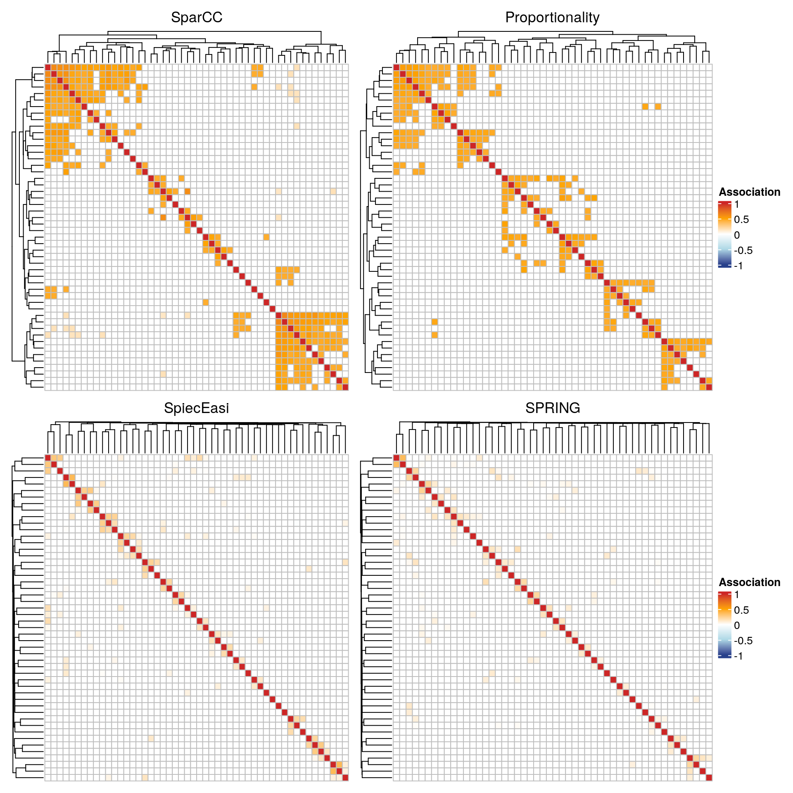
The SparCC and the proportionality network show a block structure, where each block corresponds to a cluster. The clusters are less pronounced in the conditional dependence networks. The latter also generally have lower edge weights.
12.6.5.3 Global network measures
For each association measure, the three global network measures density, transitivity, and average path length are computed and stored in a data frame for comparison.
# Compute density and store in a data frame
glob <- data.frame(Density = unlist(lapply(graphlist, edge_density)))
# Transitivity
glob$Transitivity <- unlist(lapply(graphlist, transitivity))
# Average path length
glob$Av.path <- unlist(lapply(graphlist, average.path.length))
glob## Density Transitivity Av.path
## SparCC 0.01510 0.5458 0.8932
## Proportionality 0.01295 0.5402 1.1847
## SpiecEasi 0.02162 0.2145 1.6322
## SPRING 0.01444 0.1456 1.6993